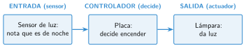

Entrada, controlador y salida
🤔 Pienso5 min
Qué hago aquí: Piensa un momento y contesta con lo que ya sabes. No pasa nada si no lo sabes: es para empezar.
Una farola se enciende sola cuando anochece. ¿Qué tiene que notar la farola? ¿Qué se pone en marcha?
📖 Leo y aprendo15 min
Qué hago aquí: Lee despacio, mira los dibujos y los ejemplos, y quédate con la idea clave del final.
Muchas máquinas funcionan solas: la farola, la puerta del supermercado, el semáforo. Todas tienen un sistema de control.
Un sistema de control tiene tres partes:
Para ver cómo funciona, dibujamos su esquema. Cada parte es una caja. Las flechas dicen hacia dónde va la información.

Más sistemas de control, con sus tres partes:
| Entrada | Controlador | Salida | |
|---|---|---|---|
| Puerta automática | sensor de presencia | placa | motor de la puerta |
| Semáforo con botón | pulsador | placa | luces |
| Robot aspirador | sensor de choque | placa | motores |
| Tu cuerpo | ojos y piel | cerebro | músculos |
✏️ Hago25 min
Qué hago aquí: Haz las actividades en orden. Empieza siempre por las básicas.
Une cada parte con lo que hace.
| Entrada • | • Decide |
| Controlador • | • Hace la acción |
| Salida • | • Recoge información |
Rodea los sensores. Subraya los actuadores.
motor pulsador termómetro bombilla altavoz micrófono zumbador cámara
Completa la tabla.
| Máquina | Entrada (sensor) | Salida (actuador) |
|---|---|---|
| Puerta automática | ||
| Secador de manos | ||
| Alarma de una casa |
Dibuja el esquema de una alarma que suena cuando se abre la puerta. Usa tres cajas y dos flechas.
Un secador de manos sigue soplando aunque quites las manos. ¿Qué parte puede estar rota? ¿Por qué?
✏️ Puedes responder escribiendo, con un dibujo o un esquema, o contándolo en voz alta.
🚀 Amplío (si quieres saber más)
Qué hago aquí: ¿Has terminado? Lee la curiosidad o elige el reto. Es voluntario.
Inventa un sistema de control útil para tu clase. Dibuja su esquema.
✅ Compruebo5 min
Qué hago aquí: Contesta sin mirar la ficha y marca cómo lo llevas.